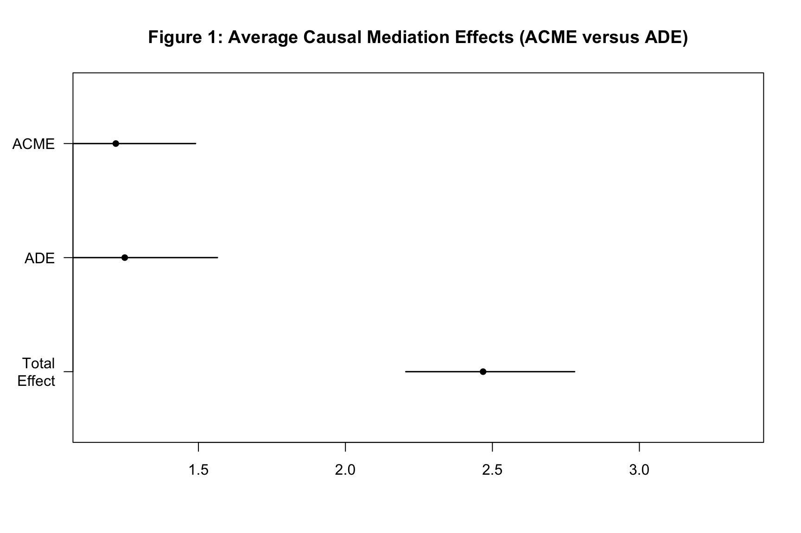
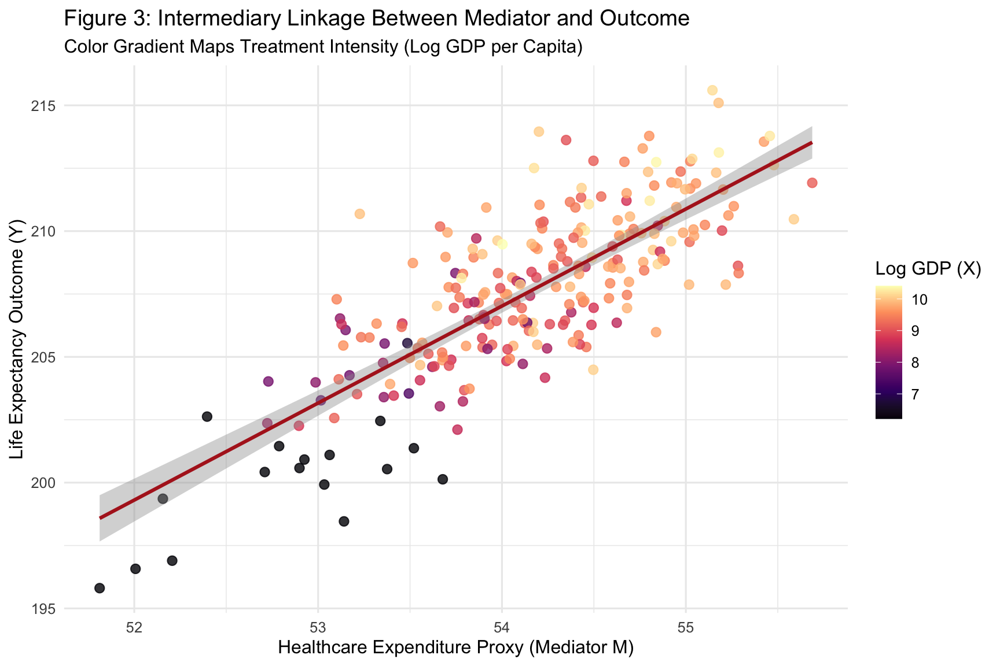

Disentangling Direct, Indirect and Latent Structural Mechanisms
Author
Neena Abimbola Albarus
1. Theoretical Foundations and Methodological Overview
Causal mediation and structural equation modeling both ask the same fundamental question. When one variable affects another, how does that effect actually flow through the system? Mediation analysis decomposes a total effect into a direct effect, which is the impact of the treatment on the outcome holding the mediator constant, and an indirect effect, which is the portion of the total effect that operates through the mediator. This decomposition lets us move beyond the question of whether something works to the question of how it works.
Structural equation modeling extends this logic to systems with multiple mediators, multiple outcomes, and unobserved or latent variables. A latent variable is a construct that we cannot measure directly, such as institutional quality or infrastructure capacity, but which we observe indirectly through multiple indicators. SEM combines a measurement model, which links latent constructs to their indicators, with a structural model, which links the latent constructs to each other. This gives us the ability to test theoretically rich models that reflect how social scientists actually think about complex systems.
In this workbook, we combine both approaches on a synthetic dataset constructed from the OWID life expectancy panel. We first estimate a simple mediation model where log GDP affects life expectancy through health expenditure. We then extend to a full SEM with two latent constructs and multiple structural paths.
⚠️ Common Pitfalls
Treating the mediator as just another control variable. Controlling for the mediator in a regression changes the coefficient on the treatment from a total effect to a direct effect. This is not automatically what you want. The choice must follow from your causal question.
Assuming you can rule out unmeasured confounding of the mediator and outcome. Mediation analysis identifies direct and indirect effects only if the treatment and mediator are both as good as randomly assigned, conditional on observed covariates. This is a strong assumption that is rarely satisfied.
Forgetting the temporal ordering requirement. The treatment must precede the mediator, which must precede the outcome. Cross sectional data cannot establish this ordering, so mediation results from cross sectional models should be interpreted with caution.
2. Data Pipeline and Synthetic Mechanisms
Before estimating any models, we locate the raw OWID data, filter to a single year of interest, and construct a synthetic mechanism with known ground truth. The synthetic construction lets us verify that the estimators recover the true parameters.
# Dynamic path resolution across common working directoriespossible_paths <-c("../data/life_expectancy_data.csv","data/life_expectancy_data.csv","../../data/life_expectancy_data.csv","/Users/yawdgyal/Desktop/R for github/data/life_expectancy_data.csv","/Users/yawdgyal/Desktop/R for github/workbooks/data/life_expectancy_data.csv")data_path <- possible_paths[file.exists(possible_paths)][1]if (is.na(data_path) ||length(data_path) ==0) {stop("Could not locate 'life_expectancy_data.csv'. ","Searched the following paths:\n",paste(possible_paths, collapse ="\n") )}message("Loading data from: ", data_path)owid_raw <-read_csv(data_path, show_col_types =FALSE)if ("Entity"%in%names(owid_raw)) { owid_df <- owid_raw %>%rename(country = Entity,code = Code,year = Year,life_exp =`Life expectancy` )} else { owid_df <- owid_df %>%rename_with(tolower)}set.seed(2026)sem_df <- owid_df %>%filter(!is.na(code), !is.na(life_exp), year ==2015) %>%mutate(# Treatment X: log GDP per capitagdp_pc =pmax(500, rnorm(n(), mean =12000, sd =8000)),log_gdp =log(gdp_pc),# Mediator M: health expenditurehealth_exp =50+0.45* log_gdp +rnorm(n(), mean =0, sd =0.5),# Outcome Y: simulated life expectancylife_exp_sim =45+1.2* log_gdp +2.8* health_exp +rnorm(n(), mean =0, sd =2),# Latent indicators for SEMgov_eff =0.7* log_gdp +rnorm(n(), 0, 1),corrupt_r =0.6* log_gdp +rnorm(n(), 0, 1),sanitation =0.8* health_exp +rnorm(n(), 0, 1) ) %>%drop_na()glimpse(sem_df)
What is happening here: The possible_paths vector lets the workbook run from multiple working directories. We then read the OWID CSV, defensively rename its columns, and filter to a single year for a cross sectional snapshot. The synthetic construction generates a treatment variable (log GDP), a mediator (health expenditure), and an outcome (life expectancy) with known structural coefficients, plus three indicator variables that will serve as loadings on the latent constructs in the SEM. The pmax(500, ...) call prevents log GDP from taking negative values, which would be impossible in reality.
⚠️ Common Pitfalls
Forgetting that this is synthetic data. The generated mechanisms are pedagogical. Do not interpret the estimated coefficients as substantive findings about the real world. They are only meaningful as a check that the estimator recovers what was built into the data.
Ignoring the correlation between the synthetic treatment and its indicators. The latent indicators gov_eff and corrupt_r are constructed to correlate with log GDP, which is what makes the SEM structural paths identifiable. Real data rarely has such clean measurement structure.
Using the real life_exp column as the outcome. In this workbook we use life_exp_sim, which is constructed from the synthetic mechanism. Mixing the real outcome with a synthetic treatment would break the mechanism.
3. Causal Mediation Analysis
With the synthetic mechanism in place, we estimate a classic mediation model. The mediator model regresses health expenditure on log GDP. The outcome model regresses life expectancy on both log GDP and health expenditure. The mediate() function then combines these two into a decomposition of the total effect.
mod_m <-lm(health_exp ~ log_gdp, data = sem_df)mod_y <-lm(life_exp_sim ~ log_gdp + health_exp, data = sem_df)modelsummary(list("Mediator Model M"= mod_m,"Outcome Model Y"= mod_y ),stars =TRUE,gof_omit ="IC|Log|F")
What is happening here: The two lm() calls estimate the mediator and outcome models separately. The mediate() function then uses quasi Bayesian simulation to compute the Average Causal Mediation Effect (ACME), the Average Direct Effect (ADE), the Total Effect, and the Proportion Mediated. The robustSE = TRUE argument computes heteroskedasticity robust standard errors, and sims = 500 sets the number of simulation draws for the confidence intervals. The summary() output reports each effect size with its confidence interval and a p value testing whether the effect is different from zero.
⚠️ Common Pitfalls
Reporting only the total effect. The whole point of mediation analysis is the decomposition. If you report only the total effect, you have thrown away the most interesting part of the result.
Interpreting the ACME without checking the sensitivity analysis. The mediation package provides medsens() for testing how robust the mediation effect is to unmeasured confounding. A mediation effect that disappears under modest confounding is not a reliable finding.
Using the wrong confidence interval method. The default in mediate() uses quasi Bayesian simulation. Bootstrapped confidence intervals are an alternative but require different arguments. Match the method to what the literature in your field expects.
4. Structural Equation Modeling
The SEM below extends the mediation logic to two latent constructs. INST represents institutional quality and is measured through government effectiveness and low corruption. INFRA represents infrastructure and is measured through health expenditure and sanitation access. Both latent constructs are allowed to influence the outcome, and INST is allowed to influence INFRA, producing a system of structural paths.
sem_spec <-' # Latent Variable Definitions INST =~ gov_eff + corrupt_r INFRA =~ health_exp + sanitation # Structural Regressions INFRA ~ INST + log_gdp life_exp_sim ~ INST + INFRA + log_gdp'fit_sem <-sem(sem_spec, data = sem_df)summary(fit_sem, fit.measures =TRUE, standardized =TRUE)
lavaan 0.7-3 ended normally after 49 iterations
Estimator ML
Optimization method NLMINB
Number of model parameters 14
Number of observations 246
Model Test User Model:
Test statistic 182.520
Degrees of freedom 6
P-value (Chi-square) 0.000
Browne's residual (NT model-based) test
Test statistic 134.689
Degrees of freedom 6
P-value (Chi-square) 0.000
Model Test Baseline Model:
Test statistic 683.259
Degrees of freedom 15
P-value 0.000
User Model versus Baseline Model:
Comparative Fit Index (CFI) 0.736
Tucker-Lewis Index (TLI) 0.340
Loglikelihood and Information Criteria:
Loglikelihood user model (H0) -1828.116
Loglikelihood unrestricted model (H1) -1736.856
Akaike (AIC) 3684.233
Bayesian (BIC) 3733.307
Sample-size adjusted Bayesian (SABIC) 3688.928
Root Mean Square Error of Approximation:
RMSEA 0.346
90 Percent confidence interval - lower 0.304
90 Percent confidence interval - upper 0.390
P-value H_0: RMSEA <= 0.050 0.000
P-value H_0: RMSEA >= 0.080 1.000
Standardized Root Mean Square Residual:
SRMR 0.268
Goodness of Fit Index:
Goodness of Fit Index (GFI) 0.852
90 Percent confidence interval - lower 0.813
90 Percent confidence interval - upper 0.886
Parameter Estimates:
Standard errors Standard
Information Expected
Information saturated (h1) model Structured
Latent Variables:
Estimate Std.Err z-value P(>|z|) Std.lv Std.all
INST =~
gov_eff 1.000 0.794 0.651
corrupt_r 0.757 0.745 1.016 0.310 0.601 0.494
INFRA =~
health_exp 1.000 0.700 0.980
sanitation 0.712 0.112 6.354 0.000 0.498 0.442
Regressions:
Estimate Std.Err z-value P(>|z|) Std.lv Std.all
INFRA ~
INST -0.088 0.085 -1.034 0.301 -0.100 -0.100
log_gdp 0.484 0.034 14.100 0.000 0.692 0.681
life_exp_sim ~
INST -0.075 0.221 -0.338 0.736 -0.059 -0.017
INFRA 2.917 0.560 5.211 0.000 2.042 0.587
log_gdp 1.190 0.295 4.029 0.000 1.190 0.337
Variances:
Estimate Std.Err z-value P(>|z|) Std.lv Std.all
.gov_eff 0.856 0.624 1.370 0.171 0.856 0.576
.corrupt_r 1.119 0.369 3.031 0.002 1.119 0.756
.health_exp 0.020 0.045 0.448 0.654 0.020 0.040
.sanitation 1.024 0.095 10.764 0.000 1.024 0.805
.life_exp_sim 3.265 0.489 6.683 0.000 3.265 0.270
INST 0.630 0.629 1.001 0.317 1.000 1.000
.INFRA 0.258 0.052 5.004 0.000 0.527 0.527
What is happening here: The lavaan syntax uses =~ for measurement relationships, meaning a latent variable is defined by its indicators, and ~ for structural regressions. The summary() call with fit.measures = TRUE reports model fit statistics such as CFI, TLI, RMSEA, and SRMR, which tell you whether the hypothesized structure is consistent with the observed covariance matrix. The standardized = TRUE argument reports standardized coefficients, which are easier to compare across paths measured on different scales.
⚠️ Common Pitfalls
Treating SEM fit indices as pass or fail. A CFI above 0.95 and RMSEA below 0.06 are conventional thresholds, but they are guidelines, not laws. Small samples can produce poor fit even for correctly specified models.
Running a SEM with too few observations. The rule of thumb is at least 5 to 10 observations per estimated parameter. If your SEM has 30 parameters and 100 observations, the estimates will be unstable.
Forgetting to specify the measurement model before the structural model. A SEM with a poorly fitting measurement model cannot have a trustworthy structural model. Always check the measurement portion first.
5. Diagnostic Visualizations
The three figures below show the mediation decomposition, the structural path diagram, and the mediator outcome linkage. Together they tell the story of how the treatment flows through the system.
Figure 1: Average Causal Mediation Effects
plot( results_med,main ="Figure 1: Average Causal Mediation Effects (ACME versus ADE)")

How to read this figure: The plot shows the ACME, ADE, and Total Effect side by side, with their confidence intervals. The ACME is the portion of the effect that flows through the mediator. The ADE is the portion that operates through other channels. The Total Effect is their sum. If the ACME confidence interval excludes zero, the mediator is a statistically significant channel.
🔑 Key Takeaway: The relative size of the ACME to the Total Effect tells you what proportion of the effect is mediated. A large proportion means the mediator is the primary channel. A small proportion means most of the effect operates through other mechanisms that you have not modeled.
How to read this figure: The diagram shows the latent variables in ovals and the observed variables in rectangles. Straight arrows represent structural paths or factor loadings. Curved arrows represent covariances. Each arrow is labeled with its standardized coefficient. The visual layout makes it easy to see which paths are strong and which are weak.
🔑 Key Takeaway: A SEM path diagram is the single most useful summary of a complex causal system. When the standardized coefficients on the structural paths are much larger than the residuals, the theoretical model is doing real explanatory work. When the residual variances are large, most of the variation in the outcomes remains unexplained.
Figure 3: Mediator Outcome Linkage
fig3 <- sem_df %>%ggplot(aes(x = health_exp, y = life_exp_sim, color = log_gdp)) +geom_point(alpha =0.8, size =2.5) +geom_smooth(method ="lm", color ="firebrick", se =TRUE) +scale_color_viridis_c(option ="magma") +theme_minimal(base_size =12) +labs(title ="Figure 3: Intermediary Linkage Between Mediator and Outcome",subtitle ="Color Gradient Maps Treatment Intensity (Log GDP per Capita)",x ="Healthcare Expenditure Proxy (Mediator M)",y ="Life Expectancy Outcome (Y)",color ="Log GDP (X)" )print(fig3)

How to read this figure: Each point is a country year observation. The horizontal axis is the mediator, the vertical axis is the outcome, and the color of each point represents the treatment intensity. The regression line shows the overall relationship between mediator and outcome. If the color gradient is also visible along the regression line, that is evidence the treatment is affecting the outcome through the mediator.
🔑 Key Takeaway: A tight mediator outcome relationship combined with a strong treatment mediator relationship is the visual signature of mediation. If the treatment varies but the mediator does not, mediation is not happening. If the mediator varies but the outcome does not respond, the mediator is not on the causal path.
6. Putting It All Together
You now have a complete mediation and SEM workflow. You have constructed a synthetic causal mechanism from the OWID panel, decomposed a total effect into direct and indirect components using the mediation package, and estimated a full latent variable structural equation model using lavaan.
The core decision rule is straightforward. Reach for simple mediation analysis when you have a single mediator and want to decompose the total effect into direct and indirect parts. Reach for structural equation modeling when you have multiple mediators, multiple outcomes, or latent constructs that are measured imperfectly through multiple indicators. Reach for multilevel mediation when the data are nested, such as countries within regions or students within schools. Reach for causal mediation with sensitivity analysis when unmeasured confounding is a serious concern and you want to bound how much your estimates could be biased.
The mediation summary plot, the SEM path diagram, and the mediator outcome scatterplot with treatment gradient are your primary reporting devices. Together they tell the reader how the effect flows through the system and how confident you are in each channel. Causal mediation is one of the most powerful tools in the social science toolkit for testing mechanism based theories, and it pairs naturally with the causal identification strategies you have studied elsewhere in this series.